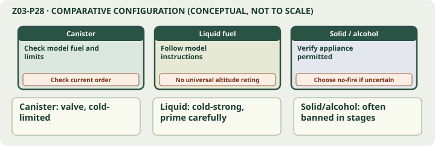

Z03-P28 · Fire and ignition · New manuscript
Compare canister, liquid-fuel and solid-fuel stoves by temperature and altitude
Match portable outdoor stove types to ambient temperature, wind, elevation and local fire-restriction rules.
When it applies · Selecting a camp stove for boiling water and cooking across three-season, winter and fire-restricted backcountry trips.
Equipment · Manufacturer stove specifications, matched fuel and current land-unit fire restriction order.

Actions
- Check the local order for the exact stove type and permitted operation. A shutoff valve alone does not establish permission. Check the model temperature and fuel limits.[C13, C15, ED]
- Match fuel and operating conditions to the stove instructions. This comparison does not establish that a given liquid-fuel stove will perform safely at a particular altitude or temperature.[C15, ED]
- Check whether the exact solid-fuel or alcohol appliance is permitted. If legality or operation is uncertain, choose a no-fire alternative.[C13, C08, ED]
Failure recognition · Taking an unregulated canister stove into 5°F winter air without testing cold output, or using an open alcohol stove during a Stage 2 shutoff-valve-only restriction.[C13, C15]
Verify · Confirm the stove matches local fire restriction rules (on/off valve requirement), forecast low temperature and manufacturer-approved fuel type.[C13, C15, ED]
Stop or change course · Never operate any stove indoors or in a tent vestibule, and never substitute unapproved fuels in a stove rated for a specific fuel.[C05, C15, C16]
Evidence and editorial notes
- C05 · CPSC · Portable Heaters and Camping Equipment (current web edition)
- Section: Carbon monoxide poisoning from portable camping equipment · Conditions: Tents, campers, vehicles and other enclosed spaces
Support: Fuel-burning camping equipment can lead to fatal carbon monoxide buildup in enclosed spaces.
Limitations: High altitude increases incomplete combustion and CO production. · Conflicting evidence: None; aligns with CDC-CO and NPS guidance.
Editorial note: Hard-stop prohibition against indoor/vestibule/tent combustion. · Specialist reviewer: Carbon monoxide safety and emergency medicine
Primary source · checked 2026-11-24 - C08 · NWS · What To Do If You're Caught in a Winter Storm (current web edition)
- Section: Outside > If there is no shelter nearby · Conditions: Stranded outdoors during a winter storm
Support: Seek shelter and block wind and wet exposure. Reduce heat loss from contact with snow or ground.
Limitations: Does not guarantee overnight survival without adequate insulation or rescue. · Conflicting evidence: None; reinforces no-fire exposure control priority.
Editorial note: Anchors no-fire fallback when ignition fails or is banned. · Specialist reviewer: Cold-weather shelter specialist
Primary source · checked 2026-11-24 - C13 · USDA Forest Service · Know Before You Go: Fire (current web edition)
- Section: Know Before You Go > Campfire Safety and Restrictions · Conditions: National Forest and public lands with seasonal fire restrictions
Support: Fire restriction stages progressively limit open campfires and may permit only liquid/gas stoves with an on/off shutoff valve in cleared areas; check current local orders before departure.
Limitations: Exact Stage 1/2/3 definitions vary by forest unit and state agency. · Conflicting evidence: None; aligns with MN-FIRE.
Editorial note: Supports fire-restriction tier decision trees and stove vs campfire distinctions. · Specialist reviewer: Fire prevention and land management
Primary source · checked 2026-11-24 - C15 · NPS · Wildland Fire Safety (current web edition)
- Section: Wildland Fire Safety > Campfires and Stoves · Conditions: Outdoor cooking with portable liquid or canister stoves
Support: Operate stoves on level cleared ground away from tents and dry fuels, cool completely before refueling, and move away from any spilled fuel before lighting.
Limitations: Fuel canisters behave differently in cold weather and high elevation; follow manufacturer limits. · Conflicting evidence: None; aligns with CPSC-C and USFS-FIRE.
Editorial note: Governs stove setup, refueling isolation, and spill failure recognition. · Specialist reviewer: Portable appliance safety and fire prevention
Primary source · checked 2026-11-24 - C16 · CDC · Carbon Monoxide Poisoning Basics (current web edition)
- Section: Carbon Monoxide Poisoning Basics > Sources and Prevention · Conditions: Any enclosed or semi-enclosed structure, garage, porch, tent, or vehicle
Support: Never burn charcoal, operate camp stoves, or run fuel-burning heaters inside homes, garages, tents, or vehicles even with doors or windows partly open.
Limitations: Vent cracks and open garage doors do not prevent lethal CO accumulation. · Conflicting evidence: Refutes dangerous myth that cracking a tent vent or garage door makes indoor combustion safe.
Editorial note: Hard-stop rule across all Z02 ventilation and Z03 combustion cards. · Specialist reviewer: Carbon monoxide safety and emergency medicine
Primary source · checked 2026-11-24
Source lineage · NPS wildland fire safety and USFS fire restrictions; new manuscript · Classification · New manuscript.